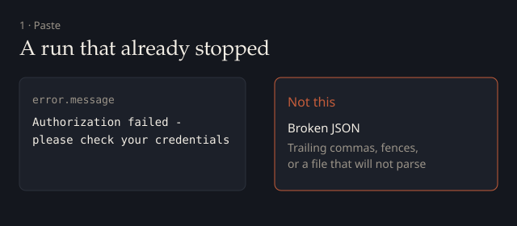
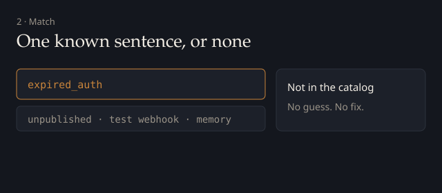
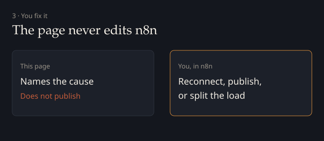

HexOrbit · no install · nothing is sent
Why did this n8n run stop?
Paste the error sentence from the red node, an execution, an Error Trigger payload, or a workflow export. The note stays in this browser. Nothing is sent. Known sentences are listed in catalog.html.
This page names why a run already stopped. It does not fix JSON. It does not edit the workflow. If the sentence is not on the catalog, the note says “Not in the catalog.” That is a limit, not a broken page.



This does not change the workflow. Apply any fix yourself in n8n.
Read as plain text: the whole paste was treated as the error sentence.
- Cause
- Node
- Note